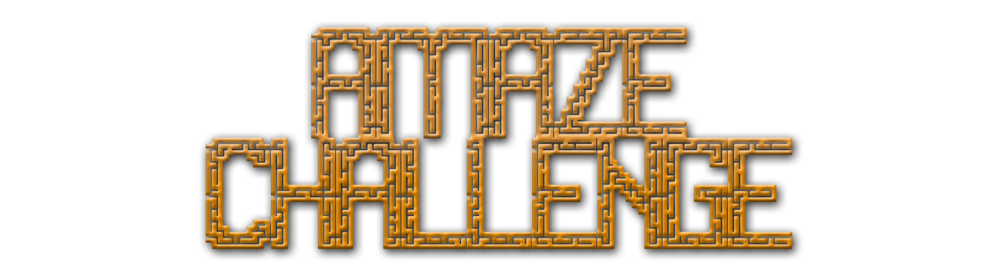

Μάθετε προγραμματισμό παίζοντας ένα διασκεδαστικό παιχνίδι!
- To aMazeChallenge είναι ενα διασκεδαστικό παιχνίδι απόδρασης απο λαβύρινθους γεμάτους με διάφορα χρήσιμα αλλά και επικίνδυνα αντικείμενα.
- Οι παίκτες πρέπει να γράψουν τον κώδικά τους με απλές εντολές, οι οποίες καθορίζουν πως θα ξεφύγουν απο το λαβύρινθο (παράδειγμα κίνηση, στροφή, έλεγχος για αντικείμενα κ.α).
- Προσοχή! Οι λαβύρινθοι είναι απρόβλεπτοι. Περιέχουν βόμβες, παγίδες κ.α τα οποία πρέπει να αποφύγετε για να φτάσετε μέχρι το τέρμα.
- Όμως υπάρχουν και βοηθητικά αντικείμενα όπως φρούτα και πόντοι, τα οποία θα σας βοηθήσουν. Νικητής ο πρώτος παίκτης που θα φτάσει στον τερματισμό
Το aMazeChallenge είναι διασκεδαστικός προγραμματισμός. Θα προγραμματίσετε στην Blockly
και θα μάθετε τα κύρια στοιχεία του προγραμματισμού παίζοντας. Όμως πρίν παίξετε με άλλους, πρέπει να εκπαιδευτείτε!
Σύρετε αριστερά